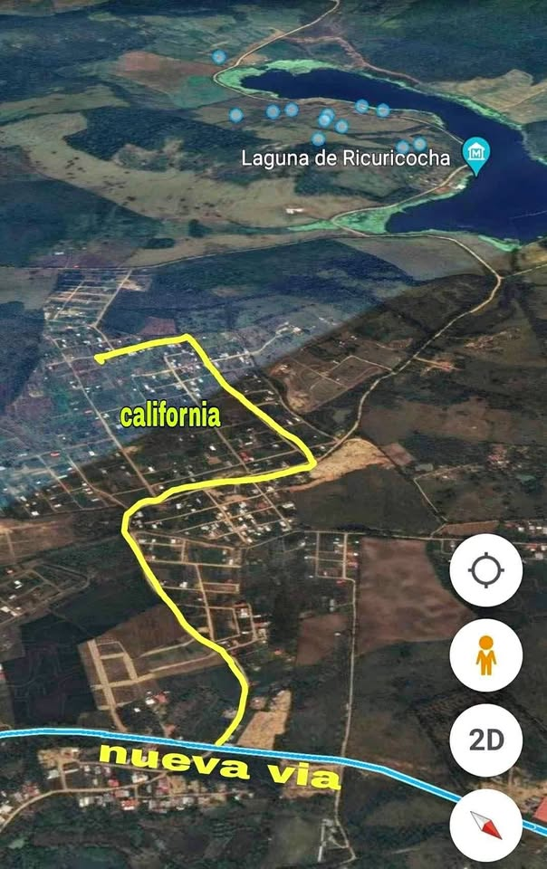

Precio desconocido 140 m²

¿Estás buscando un terreno para construir tu casa o realizar una buena inversión? 👀 Esta puede ser una excelente oportunidad. 📍 Ubicación: Urb. Mirador Nueva California 🛣️ Referencia: Camino a la Hacienda del Águila, por la nueva vía. 📐 Medidas: 7 m de frente × 20 m de fondo 📏 Área total: 140 m² 💡 Cuenta con servicios básicos: ✅ Agua ✅ Luz 📄 Documento de compra y venta 🌱 Zona con proyección y crecimiento, ideal para quienes buscan invertir en un lugar con buena accesibilidad y pensando en el futuro. 🏠 Ideal para: • Construcción de vivienda • Casa familiar • Inversión a futuro • Proyec